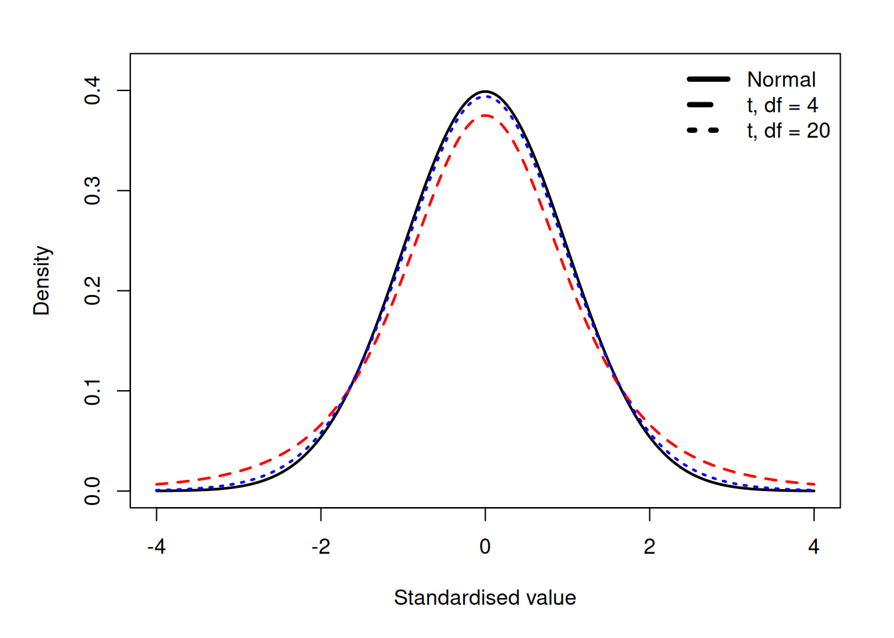

set.seed(2027)
heights <- rnorm(
20,
mean = 170,
sd = 7
)
# calculate sample SD
s <- sd(heights)
s[1] 7.635459# estimate the SE of the sample mean
n <- length(heights)
SE <- s / sqrt(n)
SE[1] 1.70734Statistical Methods for Life Sciences
In the previous section, we saw that sample means vary across repeated samples.
The standard error (SE) quantifies this sampling variation.
It is important to distinguish between the standard deviation and the standard error:
For the sample mean, the SE is the standard deviation of its sampling distribution.
A smaller SE means that repeated samples tend to produce more similar estimates. We therefore say that the estimate is more precise.
SD: How different are individuals from one another?
SE: How much would our estimate vary if we repeated the study?
For \(n\) independent observations from a population with standard deviation \(\sigma\), the standard error of the sample mean is
\[ \operatorname{SE}(\bar{X}) = \frac{\sigma}{\sqrt{n}}. \]
The formula shows that the sampling variability of the mean depends on:
Greater variation among individuals produces a larger SE. A larger sample size produces a smaller SE.
For our height model, the population SD is 7 cm:
\[ \begin{aligned} n=5: &\quad \operatorname{SE}(\bar{X}) = \frac{7}{\sqrt{5}} \approx 3.13\text{ cm},\\[4pt] n=100: &\quad \operatorname{SE}(\bar{X}) = \frac{7}{\sqrt{100}} = 0.70\text{ cm}. \end{aligned} \]
This explains the sampling distributions from the previous section: means based on 100 students were much more tightly concentrated around 170 cm than means based on five students.
Increasing the sample size improves the precision of the mean. It does not reduce the biological variation among individual students.
Because
\[ \operatorname{SE}(\bar{X})=\frac{\sigma}{\sqrt{n}}, \]
the SE decreases with the square root of the sample size.
This means that doubling the sample size does not halve the SE.
To halve the SE, we must multiply the sample size by four:
\[ \frac{\sigma}{\sqrt{4n}} = \frac{1}{2}\frac{\sigma}{\sqrt{n}}. \]
Increasing the sample size therefore improves precision, but with diminishing returns.
The formula
\[ \operatorname{SE}(\bar{X}) = \frac{\sigma}{\sqrt{n}} \]
uses the population standard deviation, \(\sigma\).
In practice, \(\sigma\) is usually unknown. We estimate it from the observed sample using the sample standard deviation, \(s\):
\[ s = \sqrt{ \frac{1}{n-1} \sum_{i=1}^{n} (x_i-\bar{x})^2 }. \]
The sample SD describes the variation among the observed individuals and provides an estimate of the population SD, \(\sigma\).
We can therefore estimate the standard error of the sample mean by
\[ \widehat{\operatorname{SE}}(\bar{X}) = \frac{s}{\sqrt{n}}. \] . . .
For example, suppose we measure the heights of 20 students:
set.seed(2027)
heights <- rnorm(
20,
mean = 170,
sd = 7
)
# calculate sample SD
s <- sd(heights)
s[1] 7.635459# estimate the SE of the sample mean
n <- length(heights)
SE <- s / sqrt(n)
SE[1] 1.70734This estimated SE describes how much the sample mean would be expected to vary across repeated samples of 20 independent students.
If we generated bootstrap means in the previous section, we can also estimate the SE by calculating their standard deviation:
bootstrap_means <- replicate(
10000,
mean(
sample(
heights,
size = length(heights),
replace = TRUE
)
)
)
sd(bootstrap_means)[1] 1.671085The formula-based and bootstrap estimates both describe the estimated sampling variability of the mean. Their values will usually be similar, although not necessarily identical.
If the population SD, \(\sigma\), is known, standardising the sample mean gives
\[ Z= \frac{\bar X-\mu} {\sigma/\sqrt n} \sim N(0,1). \]
If \(\sigma\) is unknown, which is the usual real-data situation, we replace it with the sample SD, \(s\):
\[ T= \frac{\bar X-\mu} {s/\sqrt n}. \]
Now the denominator is itself estimated from the sample, which introduces extra uncertainty.
Therefore, under a normal population model,
\[ T \sim t_{n-1}. \]
The t-distribution is similar to the standard normal distribution but has heavier tails. As the sample size increases, it approaches \(N(0,1)\).
Because \(s\) is estimated from the sample, there is extra uncertainty.
The t-distribution accounts for this uncertainty:

Suppose that we want to estimate the mean height in the population.
We could collect 100 measurements in two different ways:
Would these designs give equally precise estimates of the population mean?
No. Although both designs produce 100 measurements, they do not contain the same amount of independent information about variation between students.
In
\[ \widehat{\operatorname{SE}}(\bar{X}) = \frac{s}{\sqrt{n}}, \]
\(n\) is the number of independent students, not simply the total number of measurements.
If the between-student SD is approximately 7 cm:
\[ \begin{aligned} \text{Five students:} &\quad \operatorname{SE}(\bar{X}) \approx \frac{7}{\sqrt{5}} = 3.13\text{ cm},\\[4pt] \text{One hundred students:} &\quad \operatorname{SE}(\bar{X}) \approx \frac{7}{\sqrt{100}} = 0.70\text{ cm}. \end{aligned} \]
Repeated measurements can reduce measurement error and give a more precise measurement of each student.
However, repeatedly measuring the same five students does not give us 100 independent students. Those five students could still happen to be unusually tall or unusually short.
Therefore, measuring 100 different students generally gives a more precise estimate of the population mean, assuming that each height is measured reasonably accurately.
In biological studies, this is why technical replicates cannot replace independent biological replicates.
Previously, we used a probability distribution to ask whether an individual height was unusual.
We can now ask a different question:
Is an observed sample mean unusual relative to its expected sampling variability?
Assume that student heights follow our normal population model:
\[ X\sim N(170,7^2). \]
For a sample of 100 independent students, the sample mean follows
\[ \bar{X} \sim N\left(170,\frac{7^2}{100}\right). \]
The sampling distribution therefore has:
\[ E[\bar{X}]=170 \]
and
\[ \operatorname{SE}(\bar{X}) = \frac{7}{\sqrt{100}} = 0.70\text{ cm}. \]
Suppose that we observe a sample mean of 172 cm.
Its distance from the assumed population mean, measured in standard error units, is
\[ z = \frac{\bar{x}-\mu_0} {\sigma/\sqrt{n}} = \frac{172-170}{0.70} \approx 2.86. \]
Thus, the observed sample mean is approximately 2.86 SE above the assumed population mean.
Under the assumed model,
\[ P(\bar{X}\geq172) = 1-\Phi\left( \frac{172-170}{0.70} \right) \approx 0.0021. \]
In R:
pnorm(
172,
mean = 170,
sd = 7 / sqrt(100),
lower.tail = FALSE
)[1] 0.002137367If the population mean is 170 cm and the model assumptions hold, the probability of obtaining a sample mean of 172 cm or higher from 100 independent students is approximately 0.2%.
Such a sample mean would therefore be unusual under the assumed model.
This is the probability of obtaining a result at least this large under the assumed model.
It is not the probability that the model or the assumed population mean is correct.
An individual height of 172 cm is not unusual under the same population model.
For an individual student, we use the individual SD of 7 cm:
\[ P(X\geq172) = 1-\Phi\left( \frac{172-170}{7} \right) \approx0.3875. \]
pnorm(
172,
mean = 170,
sd = 7,
lower.tail = FALSE
)[1] 0.3875485Approximately 38.8% of individual students are expected to be at least 172 cm tall under this model.
The cutoff of 172 cm is the same in both calculations, but the relevant distributions are different:
A value can therefore be common for an individual observation but unusual for a sample mean.
In our opening example, two research groups obtained mean heights of 172 cm and 175 cm.
Their observed difference was therefore
\[ \bar{x}_2-\bar{x}_1 = 175-172 = 3\text{ cm}. \]
We now know that different random samples can produce different sample means, even when they come from the same population.
So an observed difference of 3 cm may simply reflect sampling variation.
The important question is:
Is a difference of 3 cm larger than we would expect from sampling variation alone?
To answer this, we would consider the statistic
\[ \bar{X}_2-\bar{X}_1 \]
and its sampling distribution: the distribution of differences we would obtain if we repeatedly drew two independent samples from the same population under the same conditions.
How much these differences vary depends on, among other things:
We can then compare our observed difference with the variation expected under a specified model.
This is us from probability to statistical inference.
In the next session, we will use confidence intervals and hypothesis tests to quantify uncertainty and assess evidence about population parameters.
Different samples produce different results.
The sampling distribution describes how a statistic varies across repeated samples, and the standard error quantifies this variation.
Larger independent samples generally give more precise estimates and smaller standard errors.
Statistical inference uses the observed data and a probability model to assess what the data tell us about the population.